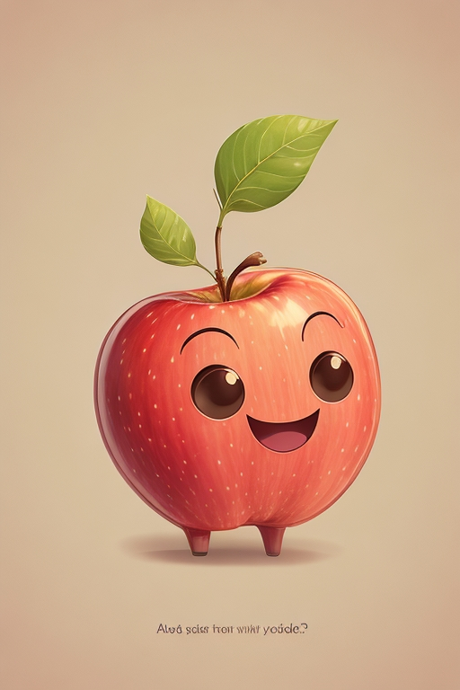

.jpg)
Маги, волшебники, ведьмы, колдуны и феи знают, что для усиления их магических сил им нужна волшебная палочка. Говорят, что эти тонкие ручные устройства были источником магии или, по крайней мере, отвлекали от ловкости рук. Многие полагают, что особое распространение волшебная палочка получила с выходом книг Дж. К. Роулинг о мальчике-волшебнике, но на самом деле у этого необычного предмета длинная и непростая история. Давайте с ней познакомимся.

Ковер-самолет - это удивительный предмет, который позволяет летать в волшебных мирах и странствовать по небу. Считается, что ковры-самолеты часто используются волшебниками и героями приключений для быстрого перемещения. Представьте, как вы можете взлететь в небо и отправиться в увлекательное путешествие, находясь на этом волшебном ковре.

Волшебные зелья - это мощные инструменты магии, которые могут исполнять различные чудеса. От превращения вещей до лечения ран, зелья могут сделать невозможное возможным. Приготовьтесь к увлекательному путешествию в мир магии и загадок с этими волшебными зельями.

Шапка невидимка - это магическая головная уборная, которая придает своему обладателю невидимость. С ней можно совершать удивительные побеги и участвовать в увлекательных приключениях, оставаясь невидимым для всех. Волшебная шапка невидимка может изменить ход исхода многих историй.

Молодильные яблоки - это волшебные фрукты, которые придают вечную молодость и жизненную силу. Они были известны в легендах и сказках, где герои отправлялись в поисках этих чудодейственных яблок, чтобы стать непобедимыми и бессмертными.

Волшебная лампа - это загадочный предмет, который часто ассоциируется с джиннами и исполнением трех желаний. Представьте, что вы нашли эту лампу и можете попросить у нее исполнения своих желаний. Какие бы вы сделали выборы?